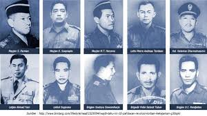
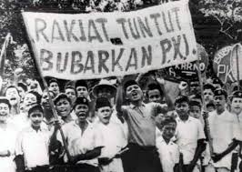

1. Asal-Usul dan Berdirinya PKI
Partai Komunis Indonesia (PKI) berawal dari organisasi Indische Sociaal-Democratische Vereeniging (ISDV) yang didirikan oleh Henk Sneevliet di Semarang tahun 1914. ISDV berideologi sosialisme dan komunisme, serta berusaha memengaruhi kaum buruh dan serdadu pribumi agar melawan penjajahan Belanda.
Pada 23 Mei 1920, ISDV berubah menjadi PKI. Tokoh-tokohnya antara lain: Henk Sneevliet, Semaun, Darsono, Alimin, dan Musso.
2. PKI di Masa Kolonial (1920–1942)
PKI berkembang pesat di kalangan buruh dan petani karena memperjuangkan hak-hak rakyat kecil dan menentang penjajahan Belanda. Namun, karena ideologinya radikal, Belanda menanggapinya dengan keras dan menjadikan PKI musuh utama.
3. Pemberontakan PKI Tahun 1926–1927
PKI melakukan pemberontakan melawan Belanda di Batavia, Banten, dan Sumatera Barat. Gerakan ini gagal total, ribuan anggota ditangkap dan dibuang ke Digul, Papua. Tokohnya seperti Musso dan Alimin melarikan diri ke luar negeri.
4. Masa Pendudukan Jepang (1942–1945)
Saat Jepang berkuasa, semua partai politik dilarang. PKI pun tidak aktif, tetapi tokoh-tokohnya di luar negeri menunggu saat yang tepat untuk kembali berjuang.
5. PKI Setelah Indonesia Merdeka (1945–1948)
Setelah Proklamasi 17 Agustus 1945, PKI muncul kembali dan mulai memengaruhi buruh dan tani. Namun ambisi politiknya menimbulkan konflik hingga pecah pemberontakan di Madiun tahun 1948.
6. Pemberontakan PKI Madiun (1948)
Pada 18 September 1948, PKI di bawah Musso mengambil alih kekuasaan di Madiun dan membunuh banyak tokoh TNI serta ulama. Pemerintah di bawah Soekarno dan Jenderal Sudirman segera menumpas gerakan ini. Musso tewas, ribuan anggota ditangkap.

7. Kebangkitan PKI di Era Demokrasi Terpimpin (1950–1965)
PKI bangkit kembali di bawah pimpinan D.N. Aidit, Njoto, Lukman, dan M.H. Lukman. Pada Pemilu 1955, PKI menjadi partai keempat terbesar dan mulai berpengaruh besar dalam politik nasional.
8. Peristiwa G30S/PKI (1965)
Pada malam 30 September 1965, sejumlah jenderal TNI AD diculik dan dibunuh oleh kelompok yang menamakan diri Gerakan 30 September. Gerakan ini kemudian dikaitkan dengan PKI. Dalam waktu singkat, gerakan tersebut ditumpas oleh pasukan di bawah komando Mayjen Soeharto.
9. Akhir Keberadaan PKI
Setelah peristiwa G30S, PKI dinyatakan terlarang berdasarkan Ketetapan MPRS No. XXV/MPRS/1966. Semua aktivitas komunisme, marxisme, dan leninisme dilarang di Indonesia. Para pemimpin PKI seperti Aidit, Njoto, dan Lukman tewas dalam penumpasan.
10. Dampak dan Warisan Sejarah
Peristiwa G30S/PKI menjadi titik balik sejarah Indonesia yang mengakhiri pemerintahan Soekarno dan membuka jalan bagi Orde Baru di bawah Soeharto. Hingga kini, PKI tetap menjadi bagian penting dari sejarah politik Indonesia abad ke-20. Sumber
⬅ Kembali ke Beranda